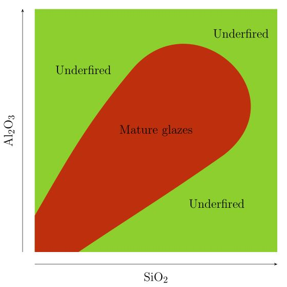

Introduction
Glaze recipes are best understood by looking at the amounts of the various oxides they contain, instead of their ingredients. The relative proportions of the oxides in a glaze determine - to a large degree - the behaviour of the glaze.
A useful way to understand the effect of a particular oxide is to create a series of glazes where all the other oxides remain in fixed proportion, and only the oxide of interest changes as you move along the series. For example, in the image below, Phosphorus oxide increases from left to right, while the other oxides remain the same.

To understand the effect of two particular oxides, we can fix the proportions of all oxides except those two, and create a rectangular array of glazes where one oxide changes horizontally, and the other vertically. If these glazes are applied to test tiles, the fired tiles can be arranged in a grid which shows how the glaze changes as the two oxides vary. The example below shows a glaze where red iron oxide increases from left to right, and titanium dioxide increases from bottom to top:

These glazes can be plotted as points on a grid, which can be used to estimate the regions where some property of the glazes holds. In this case, the regions where the glazes are more bluish and more greenish are shown:
The division of glazes into these two groups is a simplification; in reality, the colour changes continuously from blueish to greenish. In the same way, the different regions in the charts shown below are simplifications of reality.
The Stull chart
The ‘Stull chart’, drawn by R. T. Stull in 1912, is a particular example of this type of grid, where the oxides silica (SiO2) and alumina (Al2O3) vary. The diagram below depicts the properties of the glazes where silica increases from left to right, and alumina increases from bottom to top. The hatched region shows glazes that craze.
Some observations:
- In the top left corner, where SiO2 is low and Al2O3 is high, and in the bottom right corner, where SiO2 is high and Al2O3 is low, the glaze isn’t fully melted (the UNFUSED and DEVITRIFIED regions both denote immature glazes). Although the chart doesn’t extend far enough to show this, glazes which have both excessively high SiO2 and Al2O3 also won’t melt. A rough approximation of the enlarged chart is shown below.

- The region where the glazes are mature is divided into three sub-regions, MATTES, SEMI-MATTES, and BRIGHT, which here means glossy. Glazes on the boundary between the matte and semi-matte regions all have roughly 4 molecules of SiO2 for every molecule of Al2O3, while glazes on the boundary between the semi-matte and glossy regions all have roughly 5 molecules of SiO2 for every molecule of Al2O3. In other words, glazes with a SiO2 : Al2O3 ratio of less than about 4 are matte, glazes with a SiO2 : Al2O3 ratio greater than about 5 are glossy, and the ones in between are semi-matte. Glazes that are underfired will generally be matte / semi-matte.
- Glazes with low SiO2 or low Al2O3 craze, as do underfired glazes with high SiO2.
This chart was constructed by fixing the proportions of all oxides other than silica and alumina, and firing to cone 11 (the actual proportions used can be found in the original paper). If the oxides other than silica and alumina were fixed in different proportions, or the glazes were fired to a different cone, the resulting chart might look somewhat different, but the three observations above would still hold in most cases, more or less.
Using the Stull chart
Although Glazy shows a version of the Stull chart as a background image when plotting SiO2 vs Al2O3, this can’t always be relied on to predict whether a glaze will be matte or glossy, mature or not, or crazed or not. Rather think of it as a metaphor that describes the big picture.
Some of the many factors that affect a glaze are the proportions of the oxides other than silica and alumina, the cone to which the glaze is fired, the cooling rate of the kiln, and the claybody on which the glaze is fired. All of these have the potential to modify the chart. However, the overview of the glaze landscape that the chart provides can still be useful. To make an analogy, imagine being lost in a dense forest, with only a compass and a map. If the map shows that the forest gradually transitions to open country towards the north-east, you’ll be able to head out of the forest, despite not knowing your exact location on the map.
For example, if you’d like to change a glossy glaze to a matte, you can modify the glaze by decreasing the silica-alumina ratio. If the glaze contains enough silica as an ingredient, the simplest way to do this is by removing some of the silica. The example below shows a glaze where progressively more silica has been removed, moving from right to left.

Knowing the general behaviour of the map can be useful in identifying potentially problematic glazes. If you have a glaze with a SiO2 : Al2O3 ratio well above 5 that fires matte, this may be a sign that it isn’t fully mature. There may be other reasons, as explained here.
The extent of the crazed region can vary a great deal, since it depends strongly on the claybody on which the glaze is applied. However, the chart shows that a general rule of thumb to decrease crazing is to increase both silica and alumina. Other options are given here.
Other resources
-
Lecture by Matt Katz.
-
John Britt video.
-
There are sections on the Stull chart in Cullen Parmalee’s Ceramic Glazes, and the second edition of Linda Bloomfield’s Colour in Glazes.
-
Stoneware Glazes - A Systematic Approach, by Ian Currie. An excellent book, with detailed information on SiO2 - Al2O3 charts produced by the Currie grid method. If this seems too daunting as an introductory glaze calculation book, you may want to read his Revealing Glazes - Using the Grid Method first.
-
The Practice of Stoneware Glazes : Minerals, Rocks and Ashes by Brother Daniel de Montmollin (original in French) contains a series of 60 SiO2 - Al2O3 charts corresponding to different combinations of fluxes (these only show the regions where glazes melt at cone 13). Digitized versions of these charts can be found here, under ‘Montmollin Fuse Diagrams’. It will help if you uncheck ‘Show Recipes’. A summary of the book can be found here.


{kind=link}
{kind=link}
{kind=link}